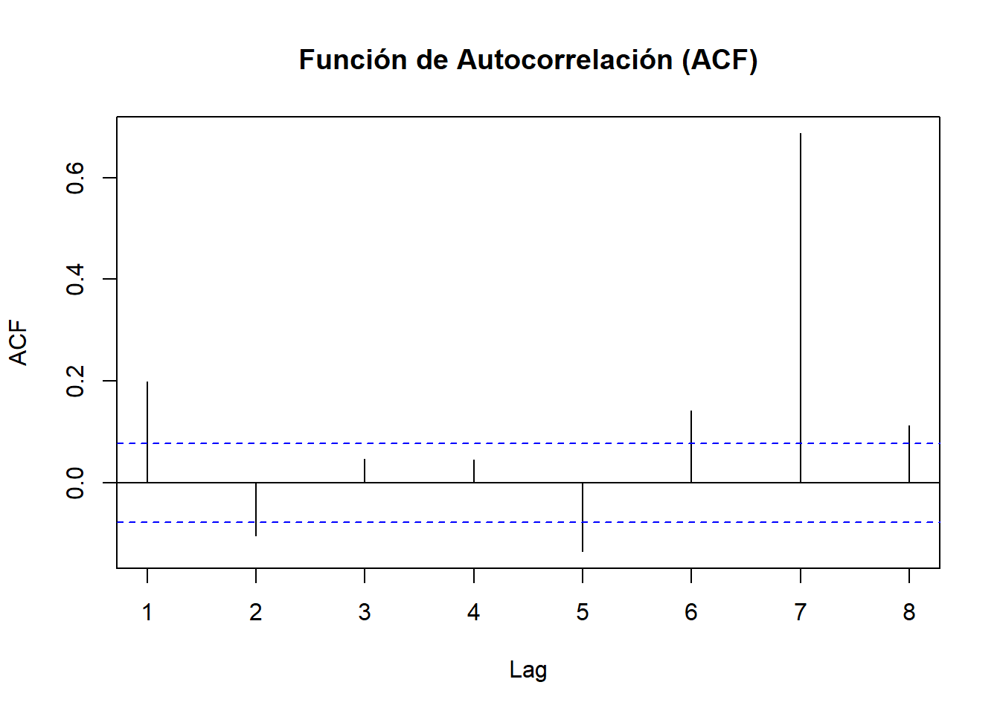
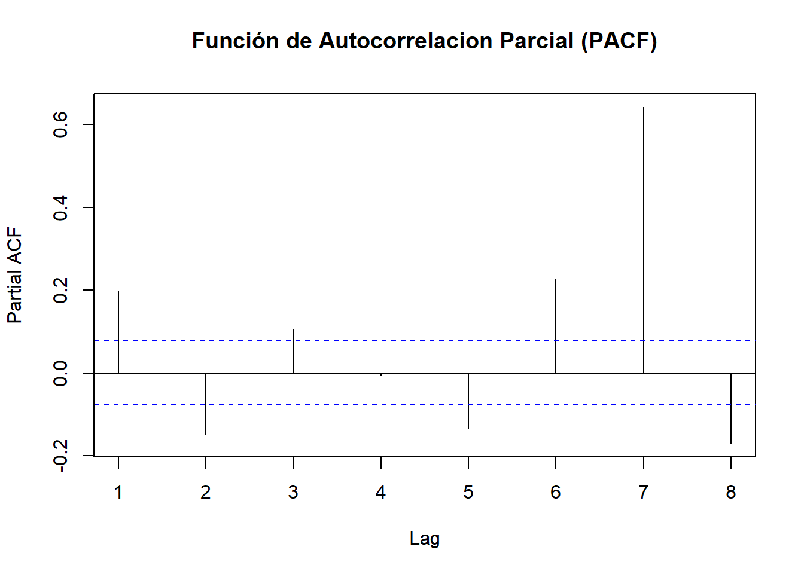
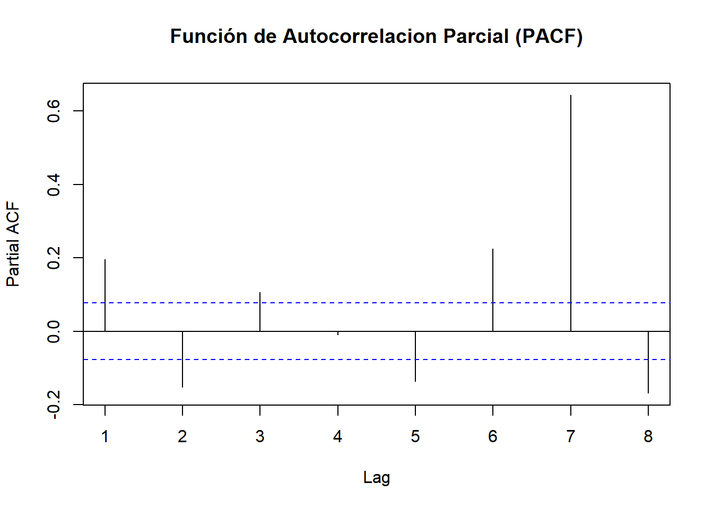

3 PREPROCESAMIENTO Y VISUALIZACION
3.1 Descomposición, estacionariedad y diferenciación - Serie de tiempo por Fecha de Pago
#install.packages("zoo")
library(TTR)
library(zoo)
# Convertir el objeto 'Datos_FP' en un ts con frecuencia semanal (si aplica)
fechas <- seq(as.Date("2023-01-01"), as.Date("2024-10-10"), by = "day")
serie_ts <- zoo(Datos_FP$Monto_USD, order.by = fechas)
#serie_ts_fo <- zoo(Datos_FO$Monto_USD, order.by = fechas)3.2 Verificar si la serie es esacionaria
# Verificar si la serie es estacionaria
# Instala y carga la librería si aún no la tienes
#install.packages("tseries")
library(tseries)
# Aplica la prueba ADF a tu serie de tiempo
adf_test <- adf.test(serie_ts)
print(adf_test)##
## Augmented Dickey-Fuller Test
##
## data: serie_ts
## Dickey-Fuller = -7.4089, Lag order = 8, p-value = 0.01
## alternative hypothesis: stationaryEl resultado de la prueba Dickey-Fuller Aumentada (ADF) indica que la serie es estacionaria por lo cual no requiere de ninguna transformacion.
Estadístico de Dickey-Fuller = -7.4089: Este es el valor calculado para el estadístico de prueba. Un valor más negativo tiende a indicar estacionariedad, ya que refuerza el rechazo de la hipótesis nula de no estacionariedad.
p-value = 0.01: Este p-valor es bajo (generalmente menor a 0.05 es un umbral común para significancia). Dado que el p-valor es 0.01, puedes rechazar la hipótesis nula de no estacionariedad con un 99% de confianza. Esto significa que hay una fuerte evidencia de que tu serie es estacionaria.
alternative hypothesis: stationary: La hipótesis alternativa de la prueba es que la serie es estacionaria. Dado que el p-valor es bajo, este resultado respalda la hipótesis alternativa, indicando estacionariedad.
En resumen, se puede concluir concluir que la serie es estacionaria con un nivel de confianza alto. Esto significa que sus propiedades estadísticas, como la media y la varianza, se mantienen constantes a lo largo del tiempo, lo cual es un buen punto de partida para aplicar modelos de series de tiempo como ARIMA, que asumen estacionariedad.
3.3 Funciones acf y pacf
# Cargar librerías necesarias
library(ggplot2)
library(gridExtra)
# Crear gráficos ACF y PACF
par(mfrow = c(2, 1)) # Configura el área de gráficos
# Gráfico ACF
acf(serie_ts, main = "Función de Autocorrelacion (ACF)", lag.max = 7)
# Gráfico PACF
pacf(serie_ts, main = "Función de Autocorrelacion Parcial (PACF)", lag.max = 7)
library(forecast)
#install.packages("TTR")
# Asegurarnos de que la frecuencia corresponde al periodo deseado
#serie_ts <- ts(Datos_FP$Monto_USD, frequency = 365, start = c(2023, 1))
# Calcula la tendencia usando una media móvil, ajusta el número de periodos según sea necesario
tendencia <- SMA(Datos_FP$Monto_USD, n = 30) # Media móvil de 30 días
# Calcula la estacionalidad (residuo de los datos menos la tendencia)
estacionalidad <- Datos_FP$Monto_USD - tendencia
# Promedia por semana para capturar un patrón estacional semanal
estacionalidad_media <- tapply(estacionalidad, as.POSIXlt(fechas)$yday %% 7, mean, na.rm = TRUE)
estacionalidad <- rep(estacionalidad_media, length.out = length(Datos_FP$Monto_USD))
# Calcula el residuo (parte aleatoria)
residuo <- Datos_FP$Monto_USD - tendencia - estacionalidad
#library(ggplot2)
df_componentes <- data.frame(
Fecha = fechas,
Datos = Datos_FP$Monto_USD,
Tendencia = tendencia,
Estacionalidad = estacionalidad,
Residuo = residuo
)
# Graficar cada componente usando ggplot2
ggplot(df_componentes, aes(x = Fecha)) +
geom_line(aes(y = Datos)) +
labs(title = "Data", y = "data")
ggplot(df_componentes, aes(x = Fecha)) +
geom_line(aes(y = Estacionalidad)) +
labs(title = "Estacionalidad", y = "seasonal")3.4 Modelo ARIMA
## Series: serie_ts
## ARIMA(1,1,2)
##
## Coefficients:
## ar1 ma1 ma2
## -0.6595 -0.1343 -0.8306
## s.e. 0.0698 0.0500 0.0485
##
## sigma^2 = 5.659e+12: log likelihood = -10433.64
## AIC=20875.29 AICc=20875.35 BIC=20893.18
##
## Training set error measures:
## ME RMSE MAE MPE MAPE MASE ACF1
## Training set 225291 2371592 1881706 -26.87723 51.80463 0.8184988 -0.0180491El resultado del summary(modelo_arima) obtenido brinda información detallada sobre el modelo ARIMA que se ha ajustado a la serie de tiempo.
3.4.1 Modelo ARIMA
- ARIMA(1,1,2): Esto indica que el modelo es un ARIMA con los siguientes parámetros:
- 1: Este número representa el orden autorregresivo \(p\) (número de términos pasados de la serie que se incluyen).
- 1: Este número representa el orden de diferenciación \(d\) (número de veces que los datos se diferencian para lograr estacionariedad).
- 2: Este número representa el orden de media móvil \(q\) (número de términos pasados de los errores que se incluyen).
3.4.2 Coeficientes del Modelo
Los coeficientes estimados del modelo son:
ar1: Este coeficiente está relacionado con el término autorregresivo del modelo. Un valor de \(-0.6595\) sugiere que existe una relación negativa entre el valor actual y el valor pasado en la serie de tiempo. En otras palabras, si el valor en el período anterior es alto, el valor en el período actual tiende a ser bajo, y viceversa.
ma1 y ma2: Estos coeficientes están relacionados con los términos de media móvil.
- ma1 = -0.1343: Indica que el primer término de error tiene una relación negativa con el valor actual.
- ma2 = -0.8306: Este coeficiente tiene una relación negativa más fuerte, lo que sugiere que los errores de dos períodos atrás tienen un impacto considerable en el valor actual.
3.4.3 Errores Estándar (s.e.)
Los errores estándar asociados a cada coeficiente te dan una idea de la incertidumbre de estas estimaciones: - s.e. ar1 = 0.0698 - s.e. ma1 = 0.0500 - s.e. ma2 = 0.0485
Un error estándar pequeño en relación con el coeficiente indica que la estimación del coeficiente es relativamente precisa.
3.4.4 Sigma^2
- sigma^2 = 5.659e+12: Este valor representa la varianza de los residuos del modelo. Un valor más bajo indicaría un mejor ajuste del modelo, ya que implica que los errores (diferencias entre los valores reales y los valores ajustados) son pequeños.
3.4.5 Log Likelihood, AIC, AICc, BIC
- Log Likelihood = -10433.64: Este valor es utilizado para comparar modelos; más cerca de cero es mejor.
- AIC = 20875.29: El Criterio de Información de Akaike (AIC) se utiliza para comparar diferentes modelos. Un valor menor indica un mejor modelo, considerando la complejidad del modelo.
- AICc = 20875.35: Es una versión corregida del AIC que se aplica a muestras pequeñas. Se prefiere usarlo cuando la muestra es relativamente pequeña en comparación con la complejidad del modelo.
- BIC = 20893.18: El Criterio de Información de Bayesian (BIC) también se utiliza para la comparación de modelos, penalizando más fuertemente los modelos complejos que el AIC. Al igual que el AIC, un valor menor es mejor.
3.5 Diagnóstico del modelo.

##
## Ljung-Box test
##
## data: Residuals from ARIMA(1,1,2)
## Q* = 329.69, df = 7, p-value < 2.2e-16
##
## Model df: 3. Total lags used: 103.6 Prediccones del Modelo ARIMA
predicciones <- forecast(modelo_arima, h = 12) #'h' indica cuántos períodos quieras predecir
plot(predicciones)
3.7 Punto de cambio de la serie de tiempo
# Instalar el paquete changepoint si no lo tienes
#install.packages("changepoint")
# Cargar el paquete
library(changepoint)
# Supongamos que tienes tu serie de tiempo 'serie_ts'
# Aplicar cpt.mean para detectar cambios en la media
punto_cambio <- cpt.mean(serie_ts)
# Mostrar los resultados
summary(punto_cambio)## Created Using changepoint version 2.2.4
## Changepoint type : Change in mean
## Method of analysis : AMOC
## Test Statistic : Normal
## Type of penalty : MBIC with value, 19.4263
## Minimum Segment Length : 1
## Maximum no. of cpts : 1
## Changepoint Locations : 456segun los resultados obtenidos, se detectó un punto de cambio en la serie de tiempo.
Changepoint type: Define el tipo de cambio detectado. En este caso, es un cambio en la media de la serie (
Change in mean), lo que implica que la funcióncpt.meanbuscó variaciones significativas en el nivel promedio de los datos.Method of analysis: AMOC: El método
AMOC(At Most One Change) implica que el análisis se ha limitado a identificar solo un posible cambio en la serie de tiempo.Test Statistic: Normal: La estadística de prueba utilizada para detectar el cambio es el test de normalidad, adecuado para datos que siguen una distribución normal.
Type of penalty: MBIC with value, 19.4263: La penalización aplicada es la
MBIC(Modified Bayesian Information Criterion), que ayuda a determinar la ubicación del cambio sin sobreajustar el modelo. El valor específico de esta penalización fue 19.4263, lo cual afecta el número de cambios detectados al favorecer soluciones con menos cambios.Minimum Segment Length: 1: Indica que la longitud mínima de un segmento entre los puntos de cambio es 1. Es decir, el análisis considera que el cambio puede ocurrir incluso en segmentos de un solo punto.
Maximum no. of cpts: 1: Se limitó el número máximo de puntos de cambio a 1, lo cual es consistente con el método
AMOCusado en el análisis.Changepoint Locations: 456: El único punto de cambio detectado se encuentra en la posición 456 de la serie de tiempo. Esto significa que se encontró un cambio significativo en la media en esa posición específica de la serie.
# Graficar la serie de tiempo con los puntos de cambio
plot(punto_cambio, main = "Puntos de Cambio en la Media")

3.9 Prueba de Ljung-Box
##
## Box-Ljung test
##
## data: residuals(modelo_arima)
## X-squared = 329.69, df = 10, p-value < 2.2e-16La prueba de Ljung-Box evalúa si los residuos del modelo ARIMA están autocorrelacionados. Esto es importante porque, idealmente, los residuos deberían comportarse como ruido blanco (es decir, sin patrones de autocorrelación) para indicar que el modelo ha capturado adecuadamente la estructura de la serie de tiempo. En esta prueba:
- Hipótesis nula (H0): No hay autocorrelación en los residuos, es decir, los residuos son ruido blanco.
- Hipótesis alternativa (H1): Existe autocorrelación en los residuos.
3.9.1 Interpretación de los Resultados
- Valor de X-squared: El estadístico de prueba
X-squaredes 329.69. Este valor indica cuánta autocorrelación existe entre los residuos en función del número de retardos especificado (en este caso, 10 retardos). - Grados de libertad (df): En este caso, son 10, lo cual corresponde al número de retardos que seleccionaste para el test.
- p-value: El valor p es menor que \(2.2 \times 10^{-16}\), lo cual es extremadamente bajo.
3.9.2 Conclusión
Dado que el valor p es mucho menor que el nivel de significancia típico (0.05), rechazamos la hipótesis nula. Esto sugiere que existe autocorrelación significativa en los residuos del modelo ARIMA. Esto indica que el modelo no ha capturado completamente los patrones en la serie de tiempo, por lo que podría necesitar ajustes adicionales en los valores de p, d, y q o en su parametrización general.
Para mejorar el modelo, considera:
1. Reexaminar el orden del modelo (ajustar p, d, q).
2. Probar otros modelos ARIMA, como un SARIMA si hay componentes estacionales.
3. Verificar si la serie requiere transformaciones adicionales.